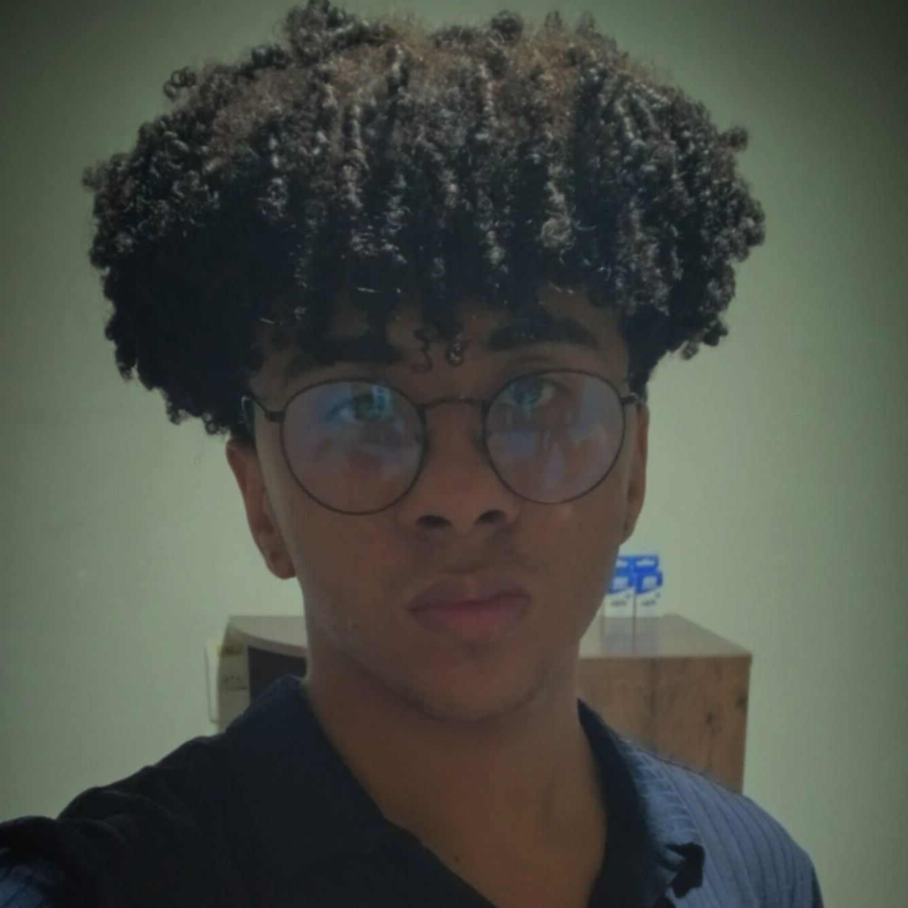

Postdoctoral Fellow
Dr. Bruno Chagas
Deflection mechanisms for NEOs on a collision course with Earth
2025-RESEARCH / PEOPLE
Students and researchers involved in projects under my supervision.
STUDENTS AND RESEARCHERS
Deflection mechanisms for NEOs on a collision course with Earth
2025-
Particle dynamics around asymmetrical bodies
2023-
Transit of particles between corotation sites
2025-
Impact modeling in Rebound code
2025-
Wisdom gap for non-spherical objects
2026-